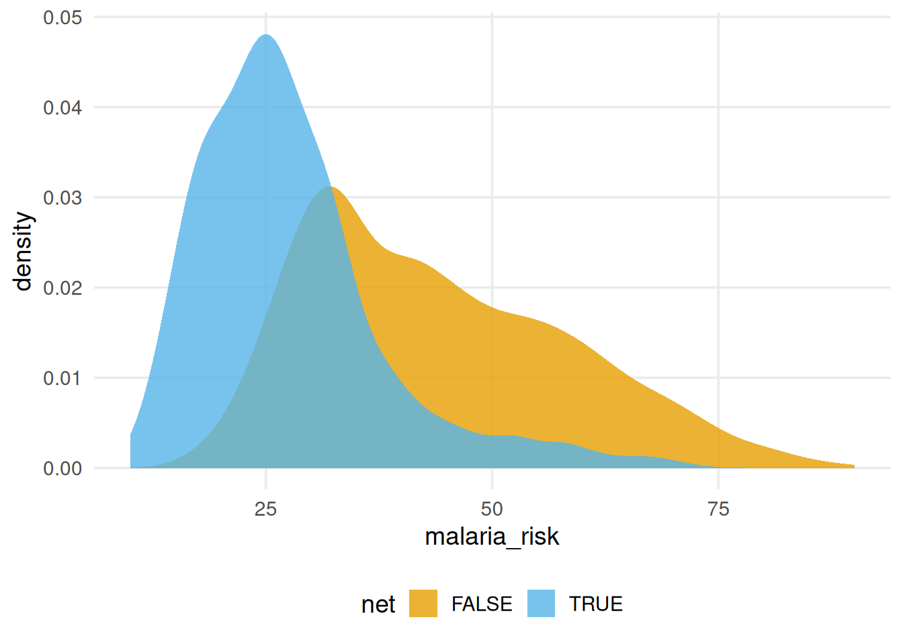
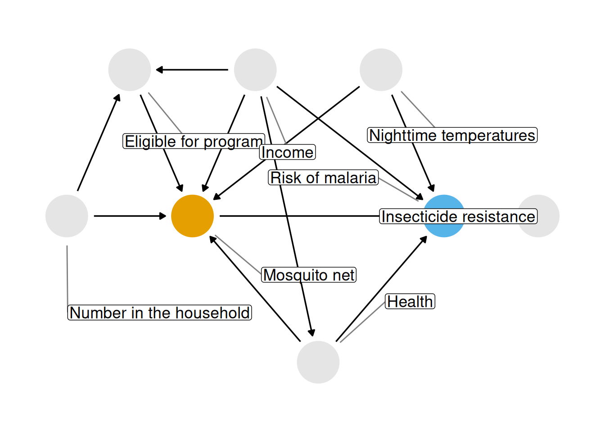
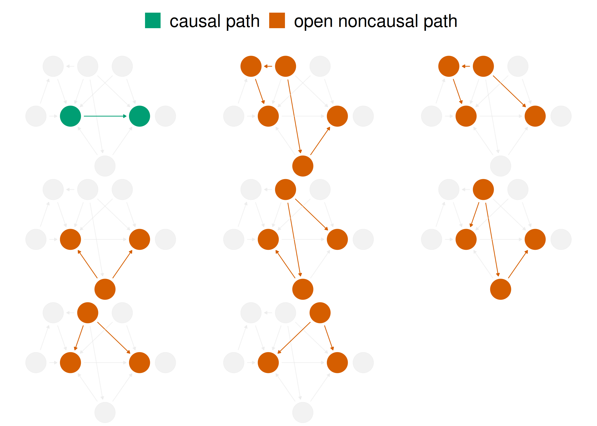
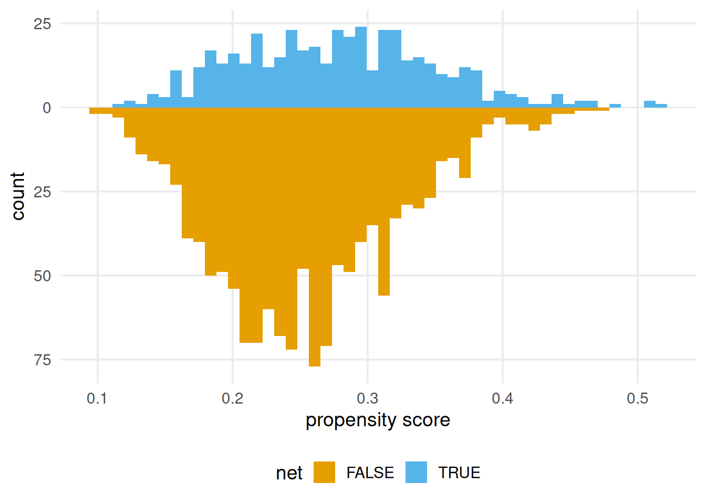
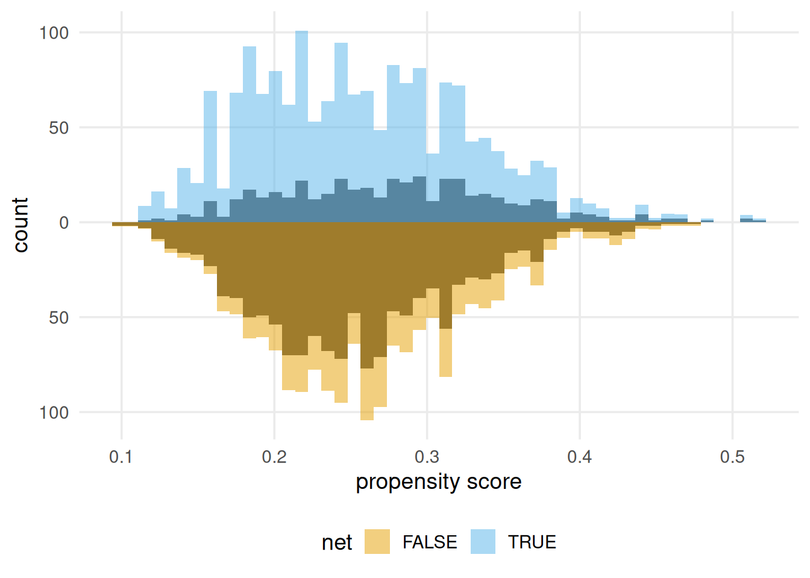
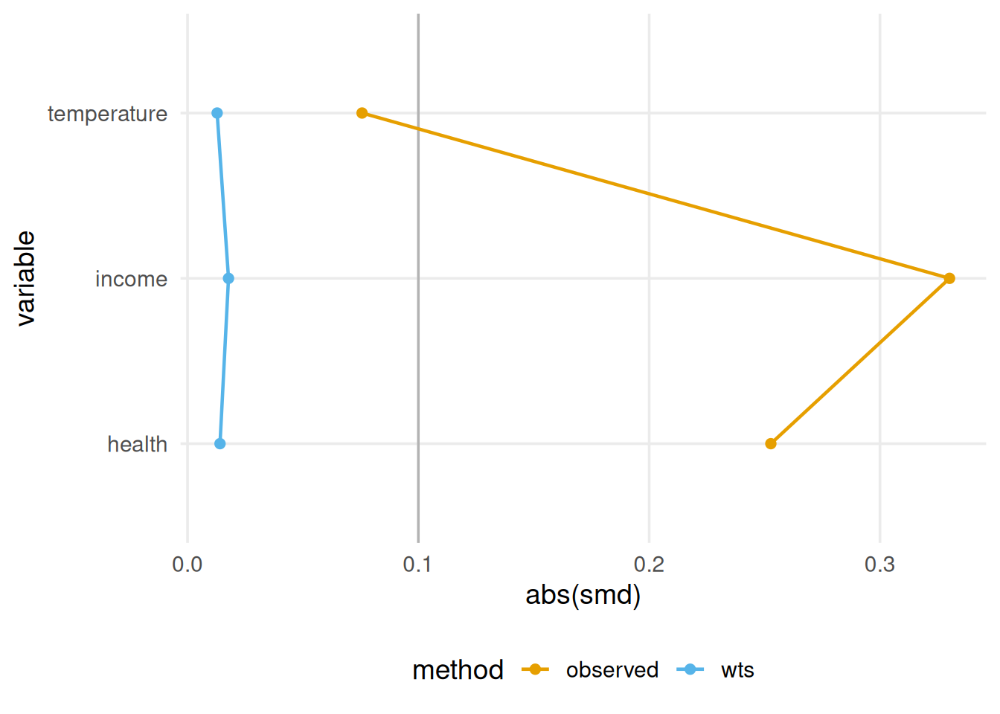
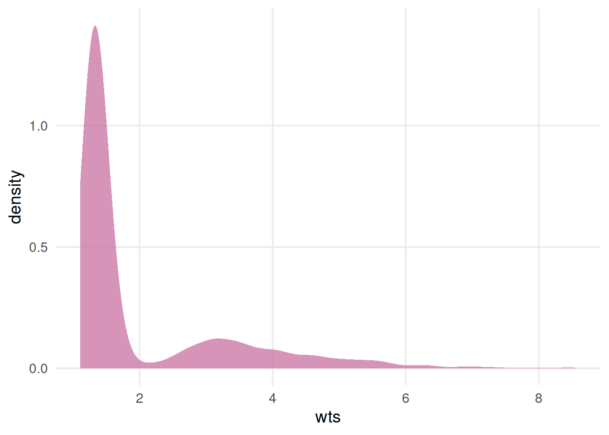
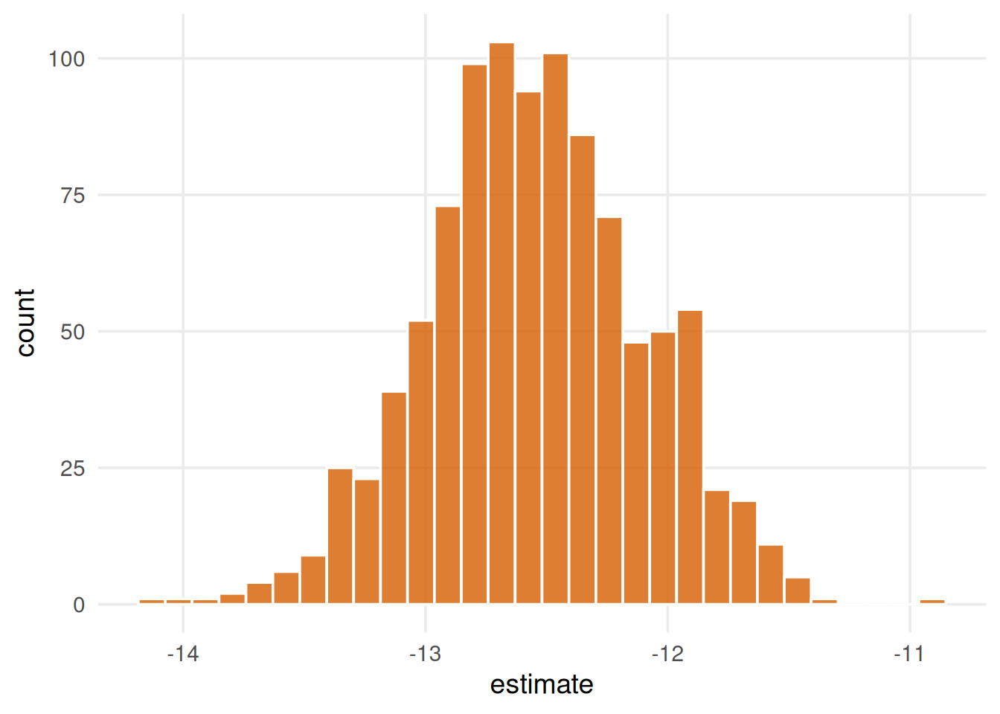
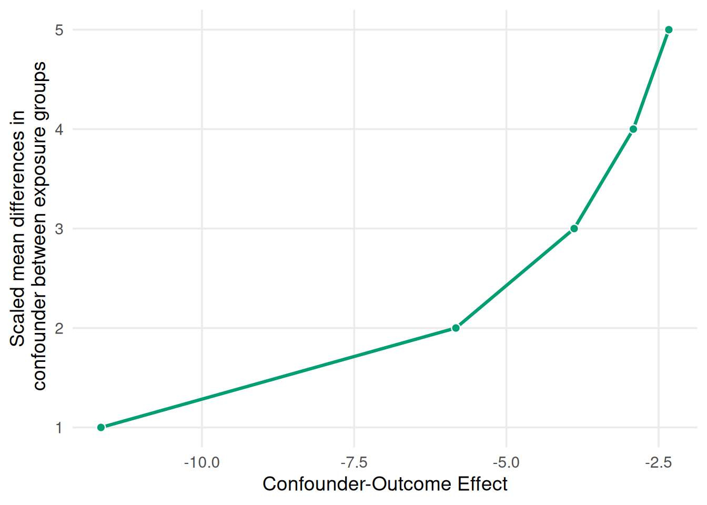
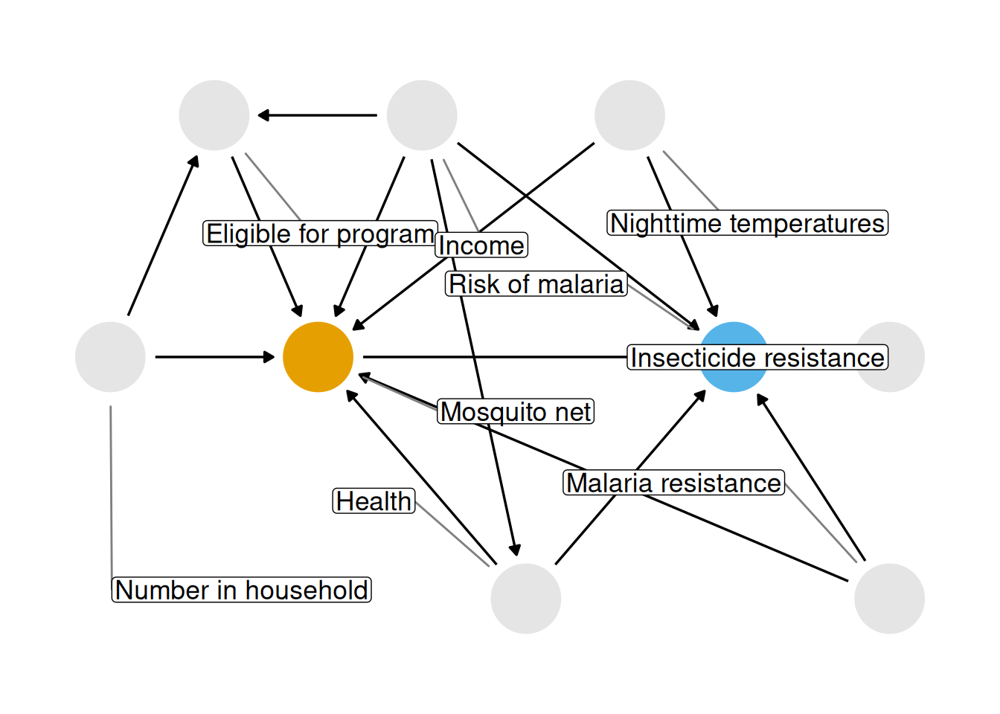

Note正在进行中 🚧
您正在阅读 Causal Inference in R 中文版的第一版草稿。本章节大部分已经完成，但我们可能会进行一些小的调整或文字编辑。
您正在阅读 Causal Inference in R 中文版的第一版草稿。本章节大部分已经完成，但我们可能会进行一些小的调整或文字编辑。
本章将使用本书介绍的技术分析数据。 我们将通过几个关键步骤完成因果分析的全流程：
我们将聚焦于每个步骤背后的总体思路，以及这些步骤结合在一起时的样貌；但并不期望你现在就完全消化每一个概念。 本书后续内容将逐一详细讨论这些步骤。
在这个引导练习中，我们将尝试回答一个因果问题：使用蚊帐是否会降低感染疟疾的风险？
疟疾仍是严重的公共卫生问题。 尽管自 2000 年以来疟疾发病率有所下降，但在 2020 年，新冠疫情主要因服务中断而导致病例数和死亡数增加 (World Malaria Report 2021)。 约 86% 的疟疾死亡发生在 29 个国家。 全部疟疾死亡中近一半仅发生在其中 6 个国家：尼日利亚（27%）、刚果民主共和国（12%）、乌干达（5%）、莫桑比克（4%）、安哥拉（3%）和布基纳法索（3%）。 其中大多数死亡发生在 5 岁以下儿童中 (Fink et al. 2022)。 疟疾还会给孕妇带来严重的健康风险，并恶化分娩结局，包括早产和低出生体重。
蚊帐通过阻挡疟原虫主要宿主蚊子的感染性叮咬，预防疟疾导致的疾病和死亡。 人类自古便开始使用蚊帐。 公元前 5 世纪希腊作家希罗多德在其著作 《历史》 中观察到埃及人将渔网用作蚊帐：
面对数量极多的蚊蚋，他们想出了如下办法：住在沼泽地上方的人受益于高塔；休息时他们登上高塔，因为蚊蚋受风力影响不能飞得太高。住在沼泽地的人则想出了另一种代替高塔的办法：每个人都有一张撒网，白天用它捕鱼，夜晚则把网围在睡觉的床周，钻到网下入睡。若人裹着衣物或亚麻布单睡觉，蚊蚋会透过这些东西叮咬；但隔着网，它们甚至不会尝试叮咬 (Macaulay 2008)。
许多现代蚊帐还经过杀虫剂处理，这一做法可追溯至第二次世界大战中的俄罗斯士兵 (Nevill et al. 1996)；尽管如此，仍有人将其用作渔网 (Gettleman 2015)。
我们很容易设想一项处理该问题的随机试验：研究参与者被随机分配使用或不使用蚊帐，并随时间对其进行随访，以观察各组间的疟疾风险是否存在差异。 随机化往往是估计干预措施因果效应的最佳方法，因为它减少了使该估计有效所需的假设数量（我们将在 ?sec-assump 中讨论这些假设）。 特别是，随机化能够很好地处理混杂，即使是我们尚未意识到的混杂因素也可被纳入考虑。
20 世纪 90 年代的数项里程碑式试验研究了蚊帐使用对疟疾风险的影响。 一项 2004 年的 Meta 分析发现，与不使用蚊帐相比，经杀虫剂处理的蚊帐使儿童死亡率降低 17%，疟原虫流行率降低 13%，非重症和重症疟疾病例减少约 50% (Lengeler 2004)。 自世界卫生组织开始推荐经杀虫剂处理的蚊帐以来，杀虫剂抗性一直是重大关切。 然而，对这些试验的后续分析发现，抗性尚未影响蚊帐带来的公共卫生获益 (Pryce et al. 2018)。
试验对确定蚊帐项目的经济学效益也产生了重要影响。 例如，一项试验比较了免费发放蚊帐与成本分担项目（参与者以补贴价格购买蚊帐）。 研究作者发现，两组的蚊帐使用率相近，而免费发放蚊帐由于更容易获得，挽救的生命更多，且每挽救一条生命的成本低于成本分担项目 (Cohen and Dupas 2010)。
出于伦理、成本和时间等多种原因，我们可能无法开展新的随机试验来估计蚊帐使用对疟疾风险的影响。 目前已有大量可靠证据支持使用蚊帐，但让我们考虑一些观察性因果推断能够发挥作用的情形。
设想我们正处在尚未开展该主题试验的时期，人们已自行开始为此目的使用蚊帐。 我们的目标或许仍是开展随机试验，但可以用观察数据更快地回答问题。 此外，这项研究的结果可能为试验设计或临时政策建议提供指导。
有时，开展试验也并不符合伦理。 疟疾研究中有一个例子源于蚊帐有效性研究：幼儿期控制疟疾是否会延迟对该病的免疫，从而导致日后出现重症疟疾或死亡？ 既然我们现在已知使用蚊帐非常有效，不给予 蚊帐就不符合伦理。 一项近期观察性研究发现，儿童期使用蚊帐对全因死亡率的益处会持续至成年期 (Fink et al. 2022)。
我们还可能希望估计不同的效应，或估计与既往试验不同人群中的效应。 例如，随机研究和观察性研究均帮助我们更好地理解：只要蚊帐使用率足够高，基于杀虫剂的蚊帐能提高整个社区对疟疾的抵抗力，而不仅限于蚊帐使用者 (Howard et al. 2000; Hawley et al. 2003)。
正如我们将在 ?sec-strat-outcome 和 ?sec-g-comp 中看到的，即使能够实施随机化，本书讨论的因果推断技术通常也很有益。
在开展观察性研究时，思考若有可能我们会实施怎样的随机试验仍然很有帮助。 在这项因果分析中，我们试图模拟的试验称为 目标试验。 思考目标试验有助于使因果问题更加精确。 我们将在 ?sec-designs 中更明确地使用这一框架；但现在，让我们考虑先前提出的因果问题：使用蚊帐（mosquito net）是否会降低疟疾风险？ 这个问题相对直观，但仍然模糊。 如 Chapter 1 所示，我们需要明确几个关键方面：
“蚊帐”指什么？ 蚊帐有多种类型：未经处理的蚊帐、经杀虫剂处理的蚊帐，以及较新的长效杀虫剂处理蚊帐。
与什么相比的风险？ 例如，我们是在将经杀虫剂处理的蚊帐与不使用蚊帐相比吗？ 与未经处理的蚊帐相比？ 还是将一种新型蚊帐，如长效杀虫剂处理蚊帐，与已在使用的蚊帐相比？
风险如何定义？ 某人是否感染疟疾？ 某人是否死于疟疾？
谁的风险？ 我们试图将这些知识应用于哪个人群？ 实际上可以将哪些人纳入研究？ 又可能需要排除哪些人？
我们将使用模拟数据回答一个更具体的问题：与不使用蚊帐相比，使用经杀虫剂处理的蚊帐是否会降低 1 年后感染疟疾的风险？ 在这份由 Andrew Heiss 博士模拟的数据中：
……研究人员关注使用蚊帐是否能降低个体感染疟疾的风险。 他们收集了一个未具名国家中 1,752 个家庭的数据，其中包括环境因素、个体健康和家庭特征相关变量。 这些数据不是实验数据—研究人员无法控制谁使用蚊帐；各个家庭自行决定是否申请免费蚊帐或购买蚊帐，以及在获得蚊帐后是否使用。
由于使用的是模拟数据，我们可以直接获得衡量感染疟疾可能性的结局变量，而现实中我们很可能无法获得这样的变量。 我们将使用这一指标，因为它能让我们更细致地检视实际效应量；而在实践中，我们需要通过其他代理指标来近似效应量，例如对人群进行定期疟疾检测。 由于数据就是如此模拟生成的，我们也可以放心地假设数据集中的人群代表了希望进行推断的人群（该未具名国家）。 模拟数据位于 {causalworkshop} 包的 net_data 中，包含 10 个变量：
idID 变量
net and net_num指示参与者是否使用蚊帐（1 为使用，0 为未使用）的二元变量
malaria_risk范围为 0–100 的疟疾风险量表
income以美元计的周收入
health范围为 0–100 的健康评分量表
household家庭居住人数
eligible指示家庭是否符合免费蚊帐项目资格的二元变量。
temperature以摄氏度计的夜间平均气温
resistance当地蚊虫的杀虫剂抗性。 量表范围为 0–100，数值越高表示抗性越强。
不同蚊帐使用情况对应的疟疾风险分布看起来差异很大。
library(tidyverse)
library(causalworkshop)
net_data |>
ggplot(aes(malaria_risk, fill = net)) +
geom_density(color = NA, alpha = 0.8)
在 Figure 2.1 中，使用蚊帐者的密度分布位于未使用者的左侧。 疟疾风险的均值差约为 16.4，提示使用蚊帐可能对疟疾具有保护作用。
net_data |>
group_by(net) |>
summarize(malaria_risk = mean(malaria_risk))# A tibble: 2 × 2
net malaria_risk
<lgl> <dbl>
1 FALSE 43.9
2 TRUE 27.5正如预期，简单线性回归也呈现出这一结果。
library(broom)
net_data |>
lm(malaria_risk ~ net, data = _) |>
tidy()# A tibble: 2 × 5
term estimate std.error statistic p.value
<chr> <dbl> <dbl> <dbl> <dbl>
1 (Intercept) 43.9 0.377 116. 0
2 netTRUE -16.4 0.741 -22.1 1.10e-95若尝试将上述简单估计解释为因果估计，我们会面临一个问题：我们观察到的效应可能由其他因素导致。 在此例中，我们将聚焦于混杂：蚊帐使用和疟疾的共同原因会使观察到的效应产生偏倚，除非我们以某种方式对其进行控制。 确定需要控制哪些变量的最佳方法之一是使用因果图。 这类图也称为因果有向无环图（DAG），可视化我们对暴露、结局及其他可能相关变量之间因果关系所作的假设。 重要的是，构建 DAG 并非数据驱动的方法；相反，我们通过关于因果问题结构的专家背景知识来提出 DAG。
以下是我们为该问题提出的 DAG。

我们将在 ?sec-dags 中探讨如何创建和分析 DAG。
在 DAG 中，每个点代表一个变量，每个箭头代表一个原因。 换言之，该图表明了我们认为这些变量之间存在何种因果关系。 在 Figure 2.2 中，我们的假设是：
你可能同意或不同意其中某些断言。 这正是好事！ 将假设摆在明面上，使我们能够透明地评估分析的科学可信度。 使用 DAG 的另一个好处是，借助其底层数学，若假设该 DAG 正确，我们可以精确确定需要控制的变量子集。
在本练习中，我们基于对数据生成方式的了解，为你提供了一个合理的 DAG。 在现实中，建立 DAG 是一项挑战，需要深入思考、领域专业知识，以及（通常还需要）多位专家的协作。
我们要处理的主要问题是，分析手头数据时，我们看到的是蚊帐使用对疟疾风险的影响以及所有其他关系的影响。 用 DAG 的术语来说，我们有不止一条开放的因果路径。 若该 DAG 正确，则存在 8 条因果路径：蚊帐使用与疟疾风险之间的路径，以及另外 7 条混杂路径。 蚊帐使用与疟疾风险之间的关联是所有这些路径作用的混合。

当我们计算仅包含蚊帐使用和疟疾风险的朴素线性回归时，观察到的效应是错误的，因为 Figure 2.3 中另外 7 条混杂路径对其造成了扭曲。 用 DAG 的术语来说，我们需要阻断这些会扭曲目标因果估计的开放路径。 （可以通过分层、匹配、加权等多种技术阻断路径。 本书将介绍若干方法。） 幸运的是，通过明确 DAG，我们能精确确定需要控制的变量。 对于这个 DAG，我们需要控制 3 个变量：health, income, and temperature。 这 3 个变量构成一个最小调整集，即阻断所有混杂路径所需的最小变量集合（或集合之一）。 我们将在 ?sec-dags 中进一步讨论调整集。
我们将使用一种称为逆概率加权（IPW）的技术来控制这些变量，并将在 ?sec-using-ps 中详细讨论该技术。 我们将用逻辑回归基于混杂因素预测接受处理的概率—即倾向评分。 随后，我们将计算逆概率权重，并将其应用于上面拟合的线性回归模型。 倾向评分模型以暴露—蚊帐使用—为因变量，以最小调整集为自变量。
一般来说，我们希望借助领域专业知识和良好的建模实践来拟合倾向评分模型。 例如，可能希望使用样条函数允许连续混杂因素呈非线性关系，或加入混杂因素之间必要的交互作用。 由于这些是模拟数据，我们知道不需要这些额外参数（因此将跳过它们）；但在实践中，通常需要这样做。 我们将在 ?sec-using-ps 中进一步讨论。
倾向评分模型是公式为 net ~ income + health + temperature 的逻辑回归模型，它基于混杂因素收入、健康状况和气温预测蚊帐使用的概率。
propensity_model <- glm(
net ~ income + health + temperature,
data = net_data,
family = binomial()
)
# the first six propensity scores
head(predict(propensity_model, type = "response")) 1 2 3 4 5 6
0.2464 0.2178 0.3230 0.2307 0.2789 0.3060 我们可以通过多种方式使用倾向评分控制混杂。 在本例中，我们将聚焦于加权。 具体而言，我们将计算平均处理效应（ATE）的逆概率权重。 ATE 表示一个特定的因果问题：如果研究中每个人都使用蚊帐，与研究中没有人使用蚊帐相比会怎样？
为计算 ATE，我们将使用 {broom} 和 {propensity} 包。 broom 的 augment() 函数从模型中提取预测相关信息并将其合并到数据中。 propensity 的 wt_ate() 函数根据倾向评分和暴露计算逆概率权重。
对于逆概率加权，ATE 权重是实际接受到的处理概率的倒数。 换言之，若使用了蚊帐，ATE 权重就是使用蚊帐概率的倒数；若未使用蚊帐，则为未使用蚊帐概率的倒数。
library(broom)
library(propensity)
net_data_wts <- propensity_model |>
augment(data = net_data, type.predict = "response") |>
# .fitted is the value predicted by the model
# for a given observation
mutate(wts = wt_ate(.fitted, net))
net_data_wts |>
select(net, .fitted, wts) |>
head()# A tibble: 6 × 3
net .fitted wts
<lgl> <dbl> <psw{ate}>
1 FALSE 0.246 1.327
2 FALSE 0.218 1.279
3 FALSE 0.323 1.477
4 FALSE 0.231 1.300
5 FALSE 0.279 1.387
6 FALSE 0.306 1.441wts 表示每个观测值在即将拟合的结局模型中被上调或下调的程度。 例如，第 16 个家庭使用了蚊帐，其预测概率为 0.41。 鉴于他们实际上使用了蚊帐，这个概率相当低，因此其权重较高，为 2.42。 换言之，相对于上面拟合的朴素线性模型，该家庭将被上调权重。 第一个家庭未使用蚊帐；其预测的蚊帐使用概率为 0.25（换一种说法，预测的未使用蚊帐概率为 0.75）。 这与其观测到的 net 值更一致，但仍存在一定的预测使用蚊帐概率，因此其权重为 1.33。
倾向评分加权的目标是对观测人群加权，使混杂因素的分布在暴露组之间达到平衡。 换言之，原则上我们是在移除 DAG 中混杂因素与暴露之间的箭头，从而使混杂路径不再扭曲估计结果。 以下是按组展示的倾向评分分布，使用 {halfmoon} 包中用于评估倾向评分模型平衡性的 geom_mirror_histogram() 创建：
library(halfmoon)
ggplot(net_data_wts, aes(.fitted)) +
geom_mirror_histogram(
aes(fill = net),
bins = 50
) +
scale_y_continuous(labels = abs) +
labs(x = "propensity score")
加权后的倾向评分创建了一个伪总体，其中的分布更加相似：
ggplot(net_data_wts, aes(.fitted)) +
geom_mirror_histogram(
aes(group = net),
bins = 50
) +
geom_mirror_histogram(
aes(fill = net, weight = wts),
bins = 50,
alpha = 0.5
) +
scale_y_continuous(labels = abs) +
labs(x = "propensity score")
在本例中，未加权分布并不算差—其形状有一定相似性，且重叠较多—但 Figure 2.5 中的加权分布更为相似。
倾向评分加权和大多数其他因果推断技术只能处理已观测到的混杂因素—而且前提是我们对它们进行了正确建模。 遗憾的是，我们仍可能存在未测量混杂，下面将对此进行讨论。
随机化是一种确实能处理未测量混杂的因果推断技术，这也是它如此强大的原因之一。
我们还可能希望了解各混杂因素下的组间平衡程度。 一种方法是计算每个混杂因素加权和未加权时的标准化均值差（SMD）。 我们将使用 tidy_smd() 计算 SMD，再使用 geom_love() 绘图；两者均为 halfmoon 的函数。
plot_df <- tidy_smd(
net_data_wts,
c(income, health, temperature),
.group = net,
.wts = wts
)
ggplot(
plot_df,
aes(
x = abs(smd),
y = variable,
group = method,
color = method
)
) +
geom_love()
一项常见准则是，平衡的混杂因素的绝对 SMD 应小于 0.1。 0.1 只是一条经验法则，但若遵循它，Figure 2.6 中的变量在加权后平衡良好（加权前则不平衡）。
在将权重应用于结局模型前，让我们检查其总体分布中是否存在极端权重。 极端权重可能使结局模型中的估计和方差不稳定，因此需要留意这一点。 我们还将在 ?sec-estimands 中讨论几种较不易出现此问题的其他权重类型。
net_data_wts |>
ggplot(aes(wts)) +
geom_density(fill = "#CC79A7", color = NA, alpha = 0.8)
Figure 2.7 中的权重呈偏态，但没有离谱的数值。 若存在极端权重，我们可能会尝试对其进行截尾或稳定化，或考虑计算不同目标估计量对应的效应，这将在 ?sec-estimands 中讨论。 不过，这里看来无需如此。
现在我们已准备好使用 ATE 权重，在朴素线性回归模型中（尝试）处理混杂。 在本例中，拟合此模型非常简单：拟合与之前相同的模型，但添加 weights = wts，以纳入逆概率权重。
net_data_wts |>
lm(malaria_risk ~ net, data = _, weights = wts) |>
tidy(conf.int = TRUE)# A tibble: 2 × 7
term estimate std.error statistic p.value conf.low
<chr> <dbl> <dbl> <dbl> <dbl> <dbl>
1 (Inte… 42.7 0.442 96.7 0 41.9
2 netTR… -12.5 0.624 -20.1 5.50e-81 -13.8
# ℹ 1 more variable: conf.high <dbl>平均处理效应的估计为 -12.5 (95% CI -13.8, -11.3)。 遗憾的是，我们所用的置信区间是错误的，因为它们没有考虑估计权重时的不确定性。 一般而言，除非将这种不确定性纳入考虑，倾向评分加权模型的置信区间会过窄。 因此，置信区间的名义覆盖率会不正确（它们并非 95% CI，因为实际覆盖率远低于 95%），并可能导致误解。
我们有多种方法可以处理这个问题，将在 ?sec-outcome-model 中详细讨论，包括 bootstrap、稳健标准误，以及使用经验三明治估计量手动考虑估计过程。 在本例中，我们将使用 bootstrap，这是一种通过重抽样计算参数分布的灵活工具。 对于许多因果模型，尤其是在问题（特别是标准误）没有闭式解，或希望避免许多此类解所固有的参数假设时，bootstrap 都是有用的工具；有关 bootstrap 的定义和工作方式，请见 ?sec-appendix-bootstrap。 我们将使用 tidymodels 生态系统中的 {rsample} 包处理 bootstrap 样本。
由于 bootstrap 非常灵活，我们需要仔细思考所计算统计量中的不确定性来源。 人们可能会想编写如下函数来拟合关注的统计量（netTRUE 的点估计）：
library(rsample)
fit_ipw_not_quite_rightly <- function(.split, ...) {
# get bootstrapped data frame
.df <- as.data.frame(.split)
# fit ipw model
lm(malaria_risk ~ net, data = .df, weights = wts) |>
tidy()
}然而，此函数无法给出正确的置信区间，因为它将逆概率权重视为固定值。 当然它们并非固定值；我们刚刚用逻辑回归估计了它们！ 我们需要通过对整个建模过程进行 bootstrap 来考虑这种不确定性。 对于每个 bootstrap 样本，都需要拟合倾向评分模型、计算逆概率权重，然后拟合加权结局模型。
library(rsample)
fit_ipw <- function(.split, ...) {
# get bootstrapped data frame
.df <- as.data.frame(.split)
# fit propensity score model
propensity_model <- glm(
net ~ income + health + temperature,
data = .df,
family = binomial()
)
# calculate inverse probability weights
.df <- propensity_model |>
augment(type.predict = "response", data = .df) |>
mutate(wts = wt_ate(.fitted, net))
# fit correctly bootstrapped ipw model
lm(malaria_risk ~ net, data = .df, weights = wts) |>
tidy()
}既然已经明确每次迭代如何计算估计值，让我们使用 rsample 的 bootstraps() 函数创建 bootstrap 数据集。 times 参数决定创建多少个 bootstrap 数据集；我们将创建 1,000 个。
bootstrapped_net_data <- bootstraps(
net_data,
times = 1000,
# required to calculate CIs later
apparent = TRUE
)
bootstrapped_net_data# Bootstrap sampling with apparent sample
# A tibble: 1,001 × 2
splits id
<list> <chr>
1 <split [1752/629]> Bootstrap0001
2 <split [1752/622]> Bootstrap0002
3 <split [1752/643]> Bootstrap0003
4 <split [1752/651]> Bootstrap0004
5 <split [1752/654]> Bootstrap0005
6 <split [1752/634]> Bootstrap0006
7 <split [1752/638]> Bootstrap0007
8 <split [1752/651]> Bootstrap0008
9 <split [1752/639]> Bootstrap0009
10 <split [1752/636]> Bootstrap0010
# ℹ 991 more rows结果是一个嵌套数据框：每个 splits 对象包含 rsample 用于对 1,000 个样本中的每个 bootstrap 样本进行子集化的元数据。 实际上共有 1,001 行，因为 apparent = TRUE 同时保留原始数据框的副本，这对某些类型的置信区间计算是必需的。 接下来，我们将运行 fit_ipw() 1,001 次，为 estimate 创建一个分布。 这一计算的核心是
fit_ipw(bootstrapped_net_data$splits[[n]])其中 n 是 1,001 个索引之一。 我们将使用 purrr 的 map() 函数遍历每个 split 对象。
ipw_results <- bootstrapped_net_data |>
mutate(boot_fits = map(splits, fit_ipw))
ipw_results# Bootstrap sampling with apparent sample
# A tibble: 1,001 × 3
splits id boot_fits
<list> <chr> <list>
1 <split [1752/629]> Bootstrap0001 <tibble [2 × 5]>
2 <split [1752/622]> Bootstrap0002 <tibble [2 × 5]>
3 <split [1752/643]> Bootstrap0003 <tibble [2 × 5]>
4 <split [1752/651]> Bootstrap0004 <tibble [2 × 5]>
5 <split [1752/654]> Bootstrap0005 <tibble [2 × 5]>
6 <split [1752/634]> Bootstrap0006 <tibble [2 × 5]>
7 <split [1752/638]> Bootstrap0007 <tibble [2 × 5]>
8 <split [1752/651]> Bootstrap0008 <tibble [2 × 5]>
9 <split [1752/639]> Bootstrap0009 <tibble [2 × 5]>
10 <split [1752/636]> Bootstrap0010 <tibble [2 × 5]>
# ℹ 991 more rows结果是另一个嵌套数据框，新增了一列 boot_fits。 boot_fits 的每个元素都是对应 bootstrap 数据集的 IPW 结果。 例如，第一个 bootstrap 数据集的 IPW 结果为：
ipw_results$boot_fits[[1]]# A tibble: 2 × 5
term estimate std.error statistic p.value
<chr> <dbl> <dbl> <dbl> <dbl>
1 (Intercept) 42.5 0.429 99.0 0
2 netTRUE -12.8 0.607 -21.1 2.78e-88现在我们得到了一个估计值分布：
ipw_results |>
# remove original data set results
filter(id != "Apparent") |>
mutate(
estimate = map_dbl(
boot_fits,
# pull the `estimate` for `netTRUE` for each fit
\(.fit) {
.fit |>
filter(term == "netTRUE") |>
pull(estimate)
}
)
) |>
ggplot(aes(estimate)) +
geom_histogram(fill = "#D55E00FF", color = "white", alpha = 0.8)
Figure 2.8 展示了 estimate 的变异情况；现在让我们使用 rsample 的 int_t() 从 bootstrap 分布中计算 95% 置信区间：
boot_estimate <- ipw_results |>
# calculate T-statistic-based CIs
int_t(boot_fits) |>
filter(term == "netTRUE")
boot_estimate# A tibble: 1 × 6
term .lower .estimate .upper .alpha .method
<chr> <dbl> <dbl> <dbl> <dbl> <chr>
1 netTRUE -13.4 -12.5 -11.7 0.05 student-t现在我们得到了一项经混杂因素调整且具有正确标准误的估计。 在疟疾风险上，所有家庭使用蚊帐与没有家庭使用蚊帐相比的效应估计为 -12.5 (95% CI -13.4, -11.7)。 在这项研究中，蚊帐确实似乎能降低疟疾风险。
我们已勾勒出一条路线图：获取观察数据，批判性地思考希望提出的因果问题，确定实现目标所需的假设，再将这些假设应用于统计模型。 获得因果问题的正确答案，依赖于我们的假设大致正确。 但如果我们的假设更接近不正确的一端呢？
剧透预警：刚才计算出的答案是错误的。 在付出这么多努力之后！
进行因果分析时，使用敏感性分析来检验假设是一个好做法。 任何研究都存在许多潜在偏倚来源，也有多种与之相应的敏感性分析 (?sec-sensitivity) ；这里我们将聚焦于无混杂这一假设。
让我们先进行广义敏感性分析，然后再对特定的未测量混杂因素提出问题。 当对未测量混杂因素掌握的信息较少时，可使用临界点分析来询问：需要多大程度的混杂才能使估计值转向零假设？ 换言之，未测量混杂因素需要有多强，才能完全解释掉我们的结果？ {tipr} 包是进行敏感性分析的工具集。 让我们考察一个未知、正态分布混杂因素的临界点。 tip_coef() 函数接受一个估计值（回归模型的 beta 系数，或该系数的上界或下界）。 它还要求提供以下之一：1）暴露组间混杂因素均值的标准化差异，或 2）混杂因素对结局的效应。 对于估计值，我们将使用更接近 0（零假设）的 conf.high，并询问：混杂因素需要在多大程度上影响疟疾风险，才能使无偏的置信区间上限为 0？ 我们将使用 tipr 在 5 种情景下计算这一答案，其中暴露组间混杂因素的均值差分别为 1、2、3、4 或 5。
library(tipr)
tipping_points <- tip_coef(
boot_estimate$.upper,
exposure_confounder_effect = 1:5
)
tipping_points |>
ggplot(aes(confounder_outcome_effect, exposure_confounder_effect)) +
geom_line(color = "#009E73", linewidth = 1.1) +
geom_point(fill = "#009E73", color = "white", size = 2.5, shape = 21) +
labs(
x = "Confounder-Outcome Effect",
y = "Scaled mean differences in\n confounder between exposure groups"
)
若存在一个未测量混杂因素，其在暴露组间的标准化均值差为 1，则该混杂因素需要使疟疾风险降低约 -11.7。 相对于其他效应，这相当强，但若我们能想到可能遗漏的因素，它也许是可行的。 反之，假设蚊帐使用与未测量混杂因素之间的关系很强，标准化均值差为 5。 在这种情况下，混杂因素与疟疾之间的关系只需为 -2.3。 现在我们必须考虑：鉴于领域知识以及本分析中观察到的效应，哪些情景是合理的？
现在让我们考虑一项更具体的敏感性分析。 一些族群，例如富拉尼人，对疟疾具有遗传抗性 (Arama et al. 2015)。 假设在模拟数据中，该未具名国家的一个未具名族群具有这种遗传性疟疾抗性。 出于历史原因，该群体的蚊帐使用率也很高。 net_data 中没有此变量，但假设我们从文献中得知，在这个样本中可以估计：
有了这些信息，我们可以使用 tipr 根据未测量混杂因素调整已计算的估计值。 我们将使用 adjust_coef_with_binary() 计算调整后的估计值。
adjusted_estimates <- boot_estimate |>
select(.estimate, .lower, .upper) |>
unlist() |>
adjust_coef_with_binary(
exposed_confounder_prev = 0.26,
unexposed_confounder_prev = 0.05,
confounder_outcome_effect = -10
)
adjusted_estimates# A tibble: 3 × 4
effect_adjusted effect_observed
<dbl> <dbl>
1 -10.4 -12.5
2 -11.3 -13.4
3 -9.56 -11.7
# ℹ 2 more variables:
# exposure_confounder_effect <dbl>,
# confounder_outcome_effect <dbl>在遗传性疟疾抗性为混杂因素的情景中，调整后的估计值为 -10.4 (95% CI -11.3, -9.6)。
事实上，这些数据正是以这样一个混杂因素模拟生成的。 蚊帐使用对疟疾的真实效应约为 -10，而生成这些数据的真实 DAG 为：

net_data 的真实因果图。该 DAG 与我们提出的 DAG 相同，但增加了一项： 遗传性疟疾抗性在因果上降低疟疾风险，并影响蚊帐使用。因此它是一个混杂因素， 也是获得无偏效应估计所需最小调整集的一部分。换言之，未将其纳入时，我们计算 得到了错误的效应。
Figure 2.10 中的未测量混杂因素在数据集 net_data_full 中以 genetic_resistance 的形式提供。 若重新计算蚊帐对疟疾风险平均处理效应的 IPW 估计，可得到 -10.2 (95% CI -11.2, -9.3)，这更接近真实答案 -10。
你怎么看？ 这一估计可靠吗？ 我们是否妥善处理了获得因果效应所需的假设，主要是不存在混杂这一假设？ 你会如何批评这个模型，又会做出哪些不同的处理？ 好吧，由于数据是模拟生成的，我们知道 -10 是正确答案；但在实践中我们永远无法完全确定，因此需要持续检验假设，直至确信它们是稳健的。 我们将在 ?sec-sensitivity 中探讨这些技术及其他方法。
为计算该效应，我们：
在本书余下部分，我们将在许多领域的案例中遵循这些总体步骤。 我们将更深入地讨论倾向评分技术，探索估计因果效应的其他方法；最重要的是，反复确认我们所作的假设是否合理—即使永远无法完全确定。